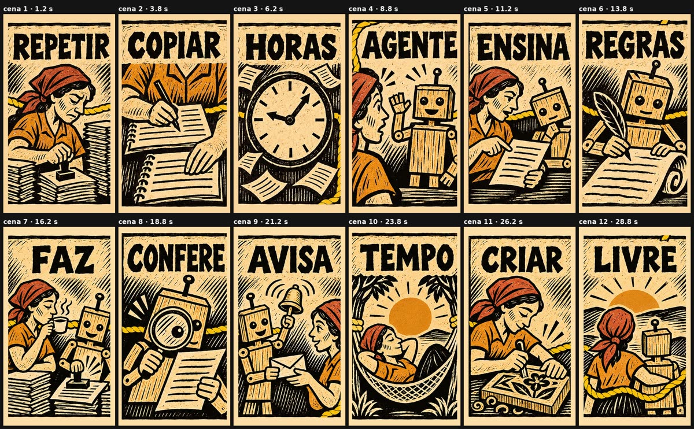

estilo en skill · kit gratis · Claude Code o Codex
Todos tus videos con el mismo estilo, solo cambiando el tema
Ves un video con un estilo visual que te encanta y no consigues repetirlo: cada video tuyo sale diferente y tu canal se queda sin identidad. Con el método estilo en skill, haces todos los videos que quieras con el estilo de ese video que admiras, solo cambiando el tema. Te muestro cómo.
Ves un video con un estilo visual que te encanta, intentas repetirlo y cada video tuyo termina con una apariencia diferente. estilo en skill es un kit gratis que estudia el lenguaje visual de ese video (colores, letras, composición, movimiento) y guarda todo en una skill, un archivo de instrucciones que Claude Code o Codex sigue. Después solo dices el tema y la skill hace el video completo con la misma apariencia: storyboard, escenas animadas, narración con una sola voz, música de fondo y una revisión antes de decir «listo». Es para quienes crean videos cortos y no programan; necesitas Claude Code o Codex, una herramienta que genere imágenes y tres programas gratis en la computadora.
Cada pedido a la IA empieza desde cero. No recuerda los colores, las letras ni la forma de encuadrar del video anterior. Escribes "estilo cordel" y cada vez entiende algo distinto. El resultado: un video con un estilo, el siguiente con otro, y tu canal sin identidad.
Lo que estudia la skill: el lenguaje
Los colores con el código exacto de cada uno, el tipo de letra, dónde queda el tema en el cuadro, la textura, la luz, cómo se mueve la cámara, cómo pasa una escena a otra, el ritmo y lo que rompería el estilo.
Lo que nunca copia: el contenido
Los personajes, los rostros, los logos, las marcas, los textos, los diálogos y la historia del video de referencia quedan fuera. El tema y los diálogos siempre son tuyos.
Dónde se guarda el estilo
En una "biblia del estilo" dentro de la skill. Cada pedido de imagen lleva la misma descripción, así que el décimo video sale con el mismo estilo que el primero.
Palabras que aparecen aquí
Skill
una carpeta con un archivo de instrucciones (y scripts) que enseña a Claude Code o Codex a hacer una tarea de principio a fin, siempre de la misma manera.
Biblia del estilo
el documento que describe el estilo con reglas que se pueden comprobar: colores en código, letra, composición, qué no hacer y una frase que va en cada pedido de imagen.
Storyboard
un solo dibujo con varias escenas lado a lado (hasta 6), como una página de historieta. El kit corta este dibujo en escenas separadas.
Motor
quien da movimiento a las escenas. El motor local y gratis hace que la cámara recorra la ilustración en tu computadora.
Música de fondo
la música de fondo. El kit usa una sola de principio a fin y baja el volumen cuando se oye la voz.
Disolución
el paso suave de una escena a otra: una imagen desaparece mientras aparece la siguiente.
Manifiesto
una ficha que la skill guarda junto al video, con la lista de todo lo que se usó y se hizo; la revisión lee esa ficha.
Cómo funciona
Del video que admiras al video verificado
Defines el estilo una sola vez. Después, cada video nuevo empieza solo con el tema.
Video de referencia→Fotogramas→Biblia del estilo→Skill→Storyboard 2×3→Escenas animadas→Una voz→Música de fondo→Video verificado
1
El kit elige los fotogramas
Del video de referencia, selecciona automáticamente de 5 a 8 imágenes distintas y las reúne en una hoja.
2
La IA escribe la biblia
Pegas un prompt listo en Claude Code o en Codex. Revisa los fotogramas y describe el estilo, sin copiar nada del contenido.
3
El estilo se convierte en skill
Un comando instala la skill con la biblia dentro, en Claude Code o en Codex. Esto se hace una vez por estilo.
4
Indicas el tema
Y otros cuatro datos, con valores predeterminados: formato (vertical, horizontal o cuadrado), duración, resolución y motor.
5
Storyboard con el estilo
La skill escribe el guion (una palabra grande y una frase corta por escena) y pide el storyboard. El segundo storyboard usa el primero como referencia para mantener los mismos personajes.
6
Anima, narra y verifica
Se anima cada escena, la narración usa una sola voz, una música de fondo suena de principio a fin y un script verifica el video. Solo entonces dice «listo».
Cuánto video cabe en cada storyboard
Cada escena dura 2,5 segundos y cada storyboard tiene hasta 6 escenas (15 segundos). Los videos más largos usan varios storyboards, creados uno a la vez. Si la duración no es múltiplo de 2,5, se redondea al valor más cercano, con aviso (17 s se convierten en 17,5 s).
Duración
Escenas
Storyboards
Diseño vertical (filas × columnas)
10 s
4
1
2 × 2
15 s
6
1
2 × 3
20 s
8
2
2 × 2 + 2 × 2
30 s
12
2
2 × 3 + 2 × 3
45 s
18
3
2 × 3, tres veces
En formato horizontal (16:9), el diseño completo es de 3 filas × 2 columnas. Cómo usar ↓
La demo
Cordel, de principio a fin
Para no usar el video de nadie, la demo tiene un estilo de referencia propio: seis cuadros de xilografía de cordel (papel crema, negro sólido, ocre, rojo terroso, letras talladas y un cordón amarillo que conecta las escenas), hechos para este kit y reunidos en un video de 12 segundos. Con ellos, se ejecutó todo el flujo con un tema que no tiene nada que ver con el cordel: «Cómo un agente de IA te quita el trabajo repetitivo del día», 30 segundos, vertical.
El estilo de referencia. Los 6 cuadros que el kit eligió por su cuenta. Mar, feria, casa, telar, canto y camino son solo la referencia: el video nuevo no repite ninguna de estas escenas, solo la forma de dibujar.Storyboard 1, tema nuevo. Seis escenas en un solo dibujo, en el mismo grabado: una mujer con pañuelo rojo, cansada del trabajo repetitivo, y un ayudante de madera (el agente). El cordón amarillo pasa de una escena a otra.Storyboard 2. Se usó el primero como referencia para mantener a la misma mujer y al mismo ayudante en las otras seis escenas.El video listo (30 s, vertical, con sonido; las palabras dibujadas y la narración están en portugués). Todo se comprobó:
30,0 segundos de duración, como se pidió
1080 × 1920, el tamaño del formato vertical
video con sonido y voz en la narración (nada silenciado)
12 frases habladas, verificadas aparte con una transcripción local: coinciden con el guion
una sola música de fondo, con el volumen más bajo durante la voz

La hoja final: un cuadro de cada escena, extraído del video listo. Se revisa antes de decir «listo»: palabra correcta, letras completas, mismo estilo en todas. Animar las 12 escenas tardó 78 segundos en esta máquina, sin ninguna IA de video.
Qué cambió
La skill mejora después de cada prueba
La skill no nace lista. Después de cada video, se revisa la hoja final, se anota lo que salió mal y se cambia la regla, no solo el pedido. En la demo hubo seis cambios.
Intento 1 (rechazado): palabras de borde a borde y poco negro. Al ampliar, desaparecían la primera y la última letra, y la ilustración parecía un dibujo a color.Intento 2 (aceptado): más masa negra y el cordón que pasa de una escena a otra. Las palabras siguieron siendo grandes, por eso la corrección fue para el recorte (punto 2).
1 · letras
La palabra demasiado grande perdía letras al ampliarLa biblia del estilo pasó a pedir que la palabra ocupe como máximo el 60% del ancho y que haya al menos un tercio de negro en cada escena.
2 · recorte
Volver a pedirlo no sirvióLa herramienta de imagen volvió a ignorar el 60%. La garantía dejó de estar en el pedido y pasó al recorte, que ahora deja un margen de papel alrededor de cada escena. La palabra cabe entera incluso con el zoom al máximo.
3 · cordón
El cordón que atravesaba confundía el recorteEl recorte busca el espacio entre las escenas y se perdía cuando el cordón amarillo pasaba por encima. Ahora tolera un detalle que las atraviese.
4 · voz
La voz de la computadora inventaba un fragmentoUna frase de cuatro palabras salía con casi 5 segundos y empujaba las siguientes hasta pasarse del final. Ahora se vuelve a generar la voz si dura demasiado para la cantidad de palabras (hasta 3 veces), y se conserva la más corta.
5 · cortes
Un corte brusco se tragó «de nuevo»Para quitar el murmullo después de la frase, el primer corte se llevó una palabra real (la transcripción lo detectó). El corte ahora es cuidadoso y se comprueba por ambos lados: quita el murmullo y conserva la última palabra.
6 · escena 3
Un sonido fuerte sin palabrasSolo se podía detectar al escuchar o transcribir. Ahora se puede rehacer solo la escena con el problema. Resultado: 12 de 12 frases correctas.
La regla que queda: si se repite el mismo error, cambia la regla (en la biblia del estilo, en las reglas del storyboard o en el script), no solo el pedido. Cómo usar ↓
Limitaciones honestas
Lo que el kit no hace (todavía)
Mejor saberlo antes de elegir el estilo.
Los detalles finos se ven borrosos
Cada storyboard sale con unos 1254 × 1254 píxeles; cada escena mide unos 370 × 600 y se amplía a 1080 × 1920. Los estilos planos (grabado, recorte, flat) aguantan bien.
El texto dibujado puede tener errores
La herramienta de imagen puede cambiar letras. Revisa cada palabra ampliada. Las palabras cortas y sin tilde tienen menos errores.
El dibujo no se mueve
El motor local mueve la cámara por la ilustración y une las escenas con una disolución. Para que un personaje camine hace falta un motor de IA de video, que no se ha probado en este kit.
La continuidad no está garantizada
El storyboard anterior se usa como referencia, pero la misma persona puede cambiar algún detalle. Revísalo antes de continuar.
La voz de la computadora inventa sonidos
El kit elimina lo que suena mucho más bajo que la voz. Un sonido fuerte sin palabras solo se detecta escuchando o transcribiendo.
La biblia del estilo la escribe la IA
La IA observa los cuadros y puede equivocarse con algún color. Revisa los colores y la lista de lo que no debes hacer antes de usarla.
Usa solo lo que puedes usar
Las referencias y la música deben ser tuyas o tener licencia. El método copia el lenguaje visual, nunca personajes, logos ni textos.
Sin pruebas en Mac
El kit se creó y probó en Linux (Ubuntu). En Mac, la instalación de la skill se hace siguiendo el método manual de la guía.
Parte técnica
El kit: para quien quiere crear su propia skill
De aquí para abajo está la parte técnica: instalar, extraer los fotogramas, crear la skill y pedir el video. No necesitas esta parte para entender lo anterior.
Qué es
Qué incluye el kit
Un kit abierto (MIT) que convierte el estilo de un video en una skill. No llama a ninguna API: todo se ejecuta en tu computadora, y la imagen del storyboard sale de la herramienta que ya usas.
Carpeta o archivo
Qué hace
scripts/quadros.py
extrae de 5 a 8 cuadros diferentes del video de referencia (cambio de escena + descarte de los parecidos) y crea la folha.jpg
prompts/criar-skill.md
el prompt que pegas en Claude Code o en Codex para escribir la biblia del estilo
scripts/instalar.sh
instala la skill en Claude Code (.claude/skills/) o en Codex (.agents/skills/)
molde/estilo-em-skill/
el molde de la skill: SKILL.md, references/ (biblia, reglas del storyboard y del video, lecciones), modelos/ (pedidos de storyboard y de video) y scripts/ (cenas.py, pedido_storyboard.py, recortar.py, animar.py, narrar.py, montar.py, validar.py, folha.py)
tests/rodar.sh
las pruebas del kit, sin pytest
exemplos/cordel/
la demo completa: referencia, cuadros, biblia, skill instalada, storyboards, guion, paneles, video final, manifiesto y LICOES.md
Requisitos previos
Lo que necesitas
No escribes código: copias comandos y conversas con la IA.
Claude Code o Codex
Para revisar los cuadros, escribir la biblia del estilo y ejecutar la skill. Ábrelo en la terminal, dentro de la carpeta del kit, con claude o codex.
Una herramienta que genere imágenes
Para el storyboard. En Codex, image_gen de la suscripción. En Claude Code, la que tengas; o genera las imágenes a mano y guárdalas donde la skill te indique.
ffmpeg, Python 3 y Pillow
ffmpeg corta, anima y une (incluye ffprobe). Python 3 ejecuta los scripts. Pillow modifica las imágenes. Los tres son gratis.
Una voz
Grabas la narración o usas una voz de computadora que funcione en tu máquina.
Música
Tuya o con licencia, en .mp3 o .wav. Sin música de fondo, la skill se detiene y pregunta.
Los pasos 1 a 4 se hacen una vez por estilo. Del paso 5 en adelante, se repiten con cada video nuevo.
1
Ejecuta las pruebas del kit
Confirma que ffmpeg, Python y Pillow estén instalados. Tarda unos minutos y termina con 24/24 testes passaram. El script usa el comando timeout, que Mac no incluye.
bash tests/rodar.sh
2
Extrae los fotogramas del video de referencia
Elige el video cuyo estilo quieres (uno que puedas usar) y guárdalo en la carpeta del kit con el nombre ref.mp4 (o cambia ref.mp4 en el comando por el nombre de tu archivo). El script elige de 5 a 8 fotogramas distintos y crea la hoja de contacto. Abre la folha.jpg y comprueba si los fotogramas muestran el estilo.
Copia la plantilla de la biblia, abre Claude Code (claude) o Codex (codex) en la carpeta del kit y pega el texto de prompts/criar-skill.md (la parte después de la línea de tres guiones). La IA revisa los fotogramas, completa la biblia y crea una imagen de prueba con un tema nuevo. Revisa los colores y «qué no hacer». Al final, no debe quedar ningún PREENCHER.
mkdir -p estilocp molde/estilo-em-skill/references/estilo.md estilo/estilo.md# después de que la IA complete la biblia, este número debe ser 0:grep -c PREENCHER estilo/estilo.md
4
Instala la skill
Elige un nombre corto para el estilo (p. ej.: meu-estilo). Claude Code lee las skills de la carpeta .claude/skills/ del proyecto que abres; Codex lee .agents/skills/. Sin --projeto, la skill se instala en la carpeta actual (la del kit).
# Claude Codebash scripts/instalar.sh meu-estilo claude --estilo estilo/estilo.md# Codexbash scripts/instalar.sh meu-estilo codex --estilo estilo/estilo.md# instalar en otra carpeta de proyectobash scripts/instalar.sh meu-estilo claude --estilo estilo/estilo.md --projeto ~/meus-videos# Claude Code, para todos los proyectosbash scripts/instalar.sh meu-estilo claude --estilo estilo/estilo.md --destino ~/.claude/skills/meu-estilo
Instalación manual (Mac, o si falla el script): copia la plantilla, añade tu biblia y cambia el nombre en el encabezado de SKILL.md. Para Codex, cambia .claude/skills por .agents/skills.
Después de instalar, abre una sesión nueva de Claude Code o Codex en esa carpeta para que pueda detectar la skill.
5
Pide el video
En la carpeta donde está instalada la skill, abre Claude Code o Codex y escribe tu pedido. Si falta alguno de los cinco datos (tema, formato, duración, resolución, motor), la skill te pregunta y sugiere los valores predeterminados (vertical, 15 s, 1080 × 1920, motor local). Pon una canción en la carpeta assets/trilha/, dentro de la carpeta donde abriste Claude Code o Codex, o indica cuál usar.
use a skill meu-estilo para um vídeo sobre como organizar a semana, 9:16, 15 segundos, motor local
6
Qué ejecuta la skill (y puedes ejecutar a mano)
Escribe el roteiro.json (una palabra grande y una frase de hasta 6 palabras por escena), genera los storyboards con la herramienta de imagen, revisa cada uno y continúa con los scripts. Estos son los comandos, en orden, desde la carpeta del proyecto (probados con los archivos de la demo; la duración debe coincidir con el número de escenas del guion):
S=.claude/skills/meu-estilo/scriptspython3 $S/cenas.py --tema "Seu tema" --duracao 30 --formato 9:16 --resolucao 1080x1920 --motor local --roteiro roteiro.jsonpython3 $S/pedido_storyboard.py# gere saida/storyboards/storyboard-1.png (e -2.png...) com o pedido de cada umpython3 $S/recortar.py --plano saida/plano.jsonpython3 $S/animar.pypython3 $S/narrar.py --arquivo voz.wavpython3 $S/montar.py --trilha minha-musica.mp3python3 $S/validar.py --duracao 30 --resolucao 1080x1920python3 $S/folha.py
Formato del roteiro, si quieres escribir el tuyo:
{"personagem": "quem aparece em várias cenas, descrito sempre igual",
"cenas": [{"texto_tela": "PALAVRA", "fala": "frase curta falada", "acao": "o que se vê", "camera": "zoom_in"}]}
Otras formas de narrar: --falas-dir falas/ (una grabación por escena), --comando '<tts> {texto} {saida}' (cualquier voz que funcione en tu máquina) y --refazer 3 (rehace solo la escena 3). --edge usa un servicio en línea y no se probó.
7
Revisa y mejora la skill
Solo está «listo» cuando validar.py imprime PASSOU y revisas la final/folha-final.jpg. Lo que salió mal va a references/licoes.md de la skill; si el error se repite, cambia la regla en la biblia, en references/regras-storyboard.md o en el script.
# la salida de la demo
ok manifesto com status completo
ok 30 arquivos do manifesto existem
ok duração 30.00 s (pedido 30 s ± 0,5)
ok resolução 1080x1920
ok áudio do vídeo com som (média -20.2 dB, pico -3.9 dB)
ok narração com voz (média -18.9 dB)
PASSOU: vídeo conferido, pode dizer pronto.
8
Revisa la demo en tu computadora
El repositorio incluye el video final, el manifiesto y la voz de la demo, pero no los archivos intermedios (paneles en PNG, clips, video sin sonido). Por eso, al clonar, la revisión usa --sem-intermediarios y comprueba 5 archivos en vez de 30.
cd exemplos/cordelpython3 skill/scripts/validar.py --sem-intermediarios --duracao 30 --resolucao 1080x1920
Motores
Quién da movimiento a las escenas
El kit no llama a ninguna API. Con los motores de IA de video, solo escribe las instrucciones; quien las ejecuta eres tú, desde tu cuenta.
Motor
Estado
Qué hace
local
probado
gratis, sin IA de video: cada escena recibe un movimiento lento de cámara (zoom lento, 1,18× por defecto y como máximo 1,25×, o paneo) y las escenas se conectan con una disolución, con la duración exacta
kling
no probado en este kit
animar.py --motor kling --so-prompts guarda en saida/prompts-kling.sh los comandos kling image_to_video para cada escena; no se envía nada
seedance / higgsfield
no probado en este kit
animar.py --motor seedance --so-prompts guarda en saida/prompts-seedance.md un prompt por storyboard (duración de cada escena, cámara, texto, transición, voz, sin música) para pegar en el sitio
Con kling o seedance, los clips que generes vuelven a saida/clipes/ y la skill continúa desde la narración.
Pruebas
Lo que el kit garantiza
bash tests/rodar.sh ejecuta 24 pruebas con imágenes sintéticas y tonos en lugar de voz y música (24/24 aprobadas el 13/11/2026, en Ubuntu).
Cuadros diferentes
quadros.py usa el cambio de escena de ffmpeg y descarta los cuadros parecidos (dibujo y color); si el video tiene pocos cambios, usa cuadros espaciados.
Recorte que encuentra el canal
recortar.py encuentra el espacio entre los paneles (claro u oscuro, incluso si el cordón lo cruza); si no lo encuentra, recorta en una cuadrícula fija. Deja un margen para que el zoom no corte la palabra.
Duración exacta
animar.py no acorta el video con el fundido: se piden 30 s y se entregan 30 s.
Voz que cabe
narrar.py recorta el silencio de los extremos, acelera hasta un 15 % si hace falta, avisa cuando la narración no cabe y rechaza una voz muda.
Una sola música de fondo
montar.py usa la misma música de principio a fin (volumen 0,5, más baja durante la voz, fundido al final). Si no hay música de fondo, se detiene y pregunta.
Verificación real
validar.py verifica los archivos del manifiesto, la duración ±0,5 s, la resolución, el audio y la narración (que no sean silencio), la música de fondo y status: completo. Si algo falla, termina con un error e indica qué falta.
Roadmap
Próximos pasos
Hoy
Motor local probado, demo cordel completaPlantilla de la skill, instalación en Claude Code y Codex, 24 pruebas, video de 30 s revisado y las lecciones de la demo.
Próximo
Probar los motores de IA de videokling y seedance/higgsfield ya generan los pedidos; falta ejecutarlos en una cuenta y revisar el resultado.
Después
MacProbar la instalación y las pruebas en Mac (hoy el instalar.sh usa el sed de Linux).